Exploro lo contemporáneo desde lo grotesco y la contradicción
Juan Dolores Caballero es director escénico, con formación como actor en el Instituto del Teatro de Sevilla y graduado en Bellas Artes por la Universidad de Sevilla. Desarrolla su trabajo en el marco de la compañía Teatro del Velador, desde donde articula una línea de creación propia. Su trabajo se sitúa en los márgenes de lo normativo, explorando la escena contemporánea desde la deformación, lo grotesco y la contradicción.
A lo largo de su trayectoria ha desarrollado un lenguaje propio en el que convergen teatro, danza, flamenco y ópera, integrando la dirección, la escenografía y el vestuario en una única escritura escénica.
Ha dirigido más de cincuenta espectáculos presentados en festivales y espacios de referencia como el Festival Internacional de Teatro Clásico de Almagro, el Festival de Mérida, el Teatro Central y el Teatro Lope de Vega de Sevilla, el Círculo de Bellas Artes de Madrid o el Festival Internacional de Danza de Itálica, además de circuitos internacionales en Europa.
Su trabajo ha sido reconocido en diversas ocasiones, siendo finalista en dos ediciones de los Premios Max y recibiendo premios en el ámbito del teatro, la danza y el flamenco.
Paralelamente, ha desarrollado una labor pedagógica como director y profesor de la Escuela de Dirección y Escenografía del Centro Andaluz de Teatro y como profesor externo del Máster de Artes del Espectáculo Vivo de la Universidad de Sevilla.
· Las Gracias Mohosas
· El Invisible Príncipe del Baúl · Rey Perico y la Dama Tuerta · La cárcel de Sevilla·Las Presidentas (Werner Schwab)
· La Noche (Maeterlinck) · El Rayo Colgado (Francisco Nieva) · El Deseo atrapado por la cola (Picasso)· Augusto
· Dröppo· Rey para una tarde lluviosa (Ricardo III)
· Hildegard · Upper · La Cocina de los Ángeles · Les Vieux · Hamvito· La Medium (Menotti)
· El Pequeño Deshollinador (Britten) · Metamorfosis (Diana Pérez Custodio)· Catedral (Premio Nacional de Danza 2022)
· Distopía · Lenguaje oculto · La tentación de Poe · Origen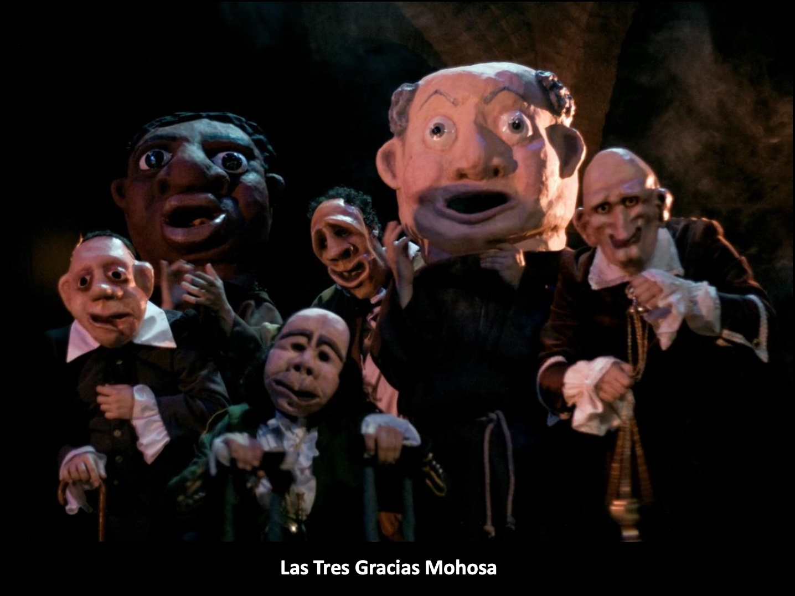
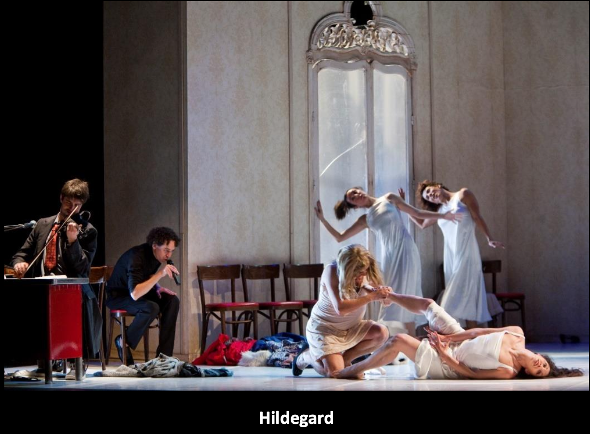
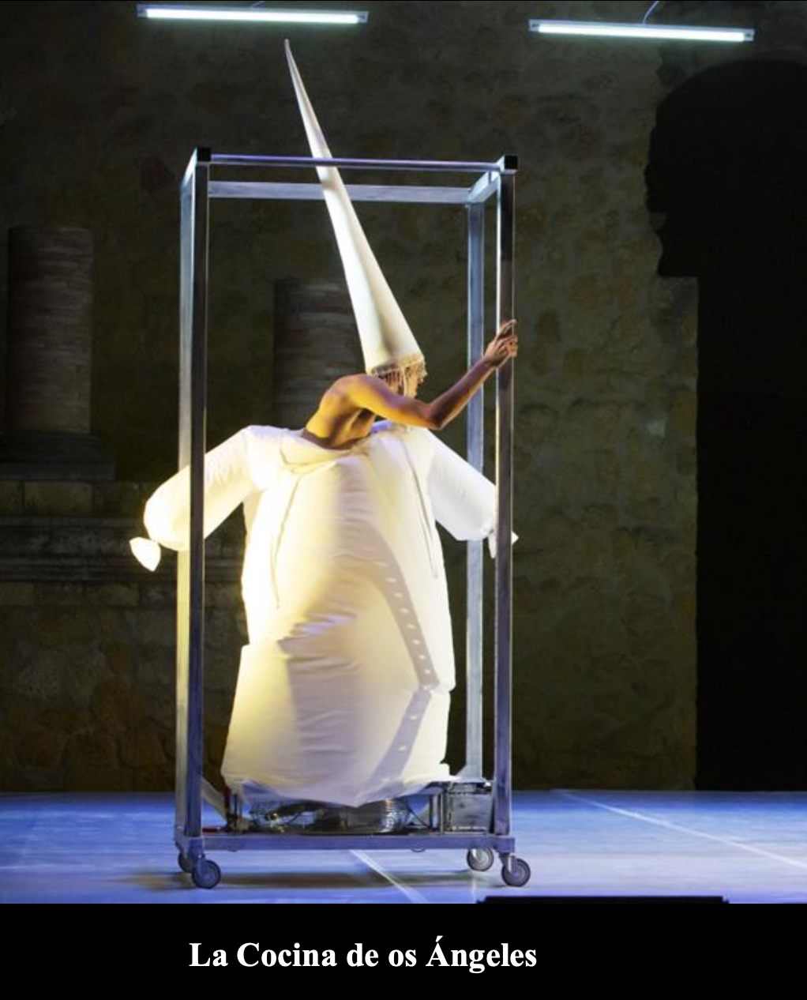
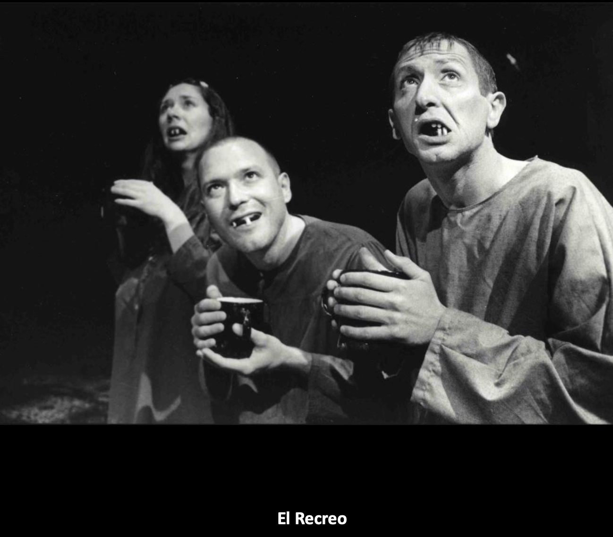
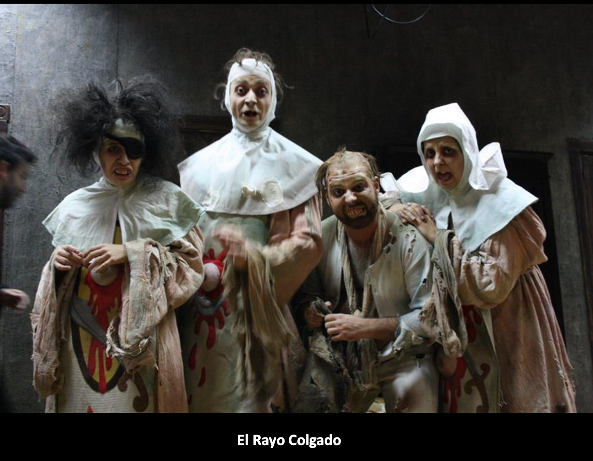
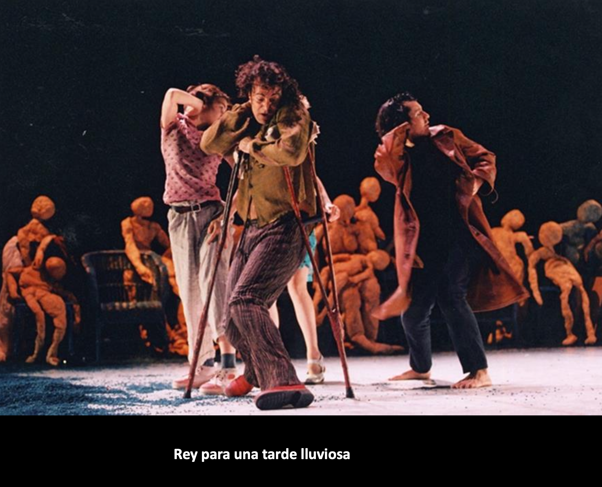
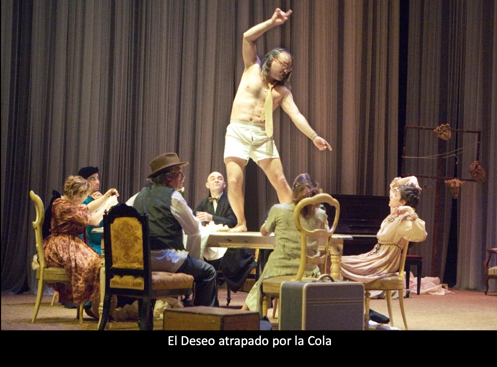
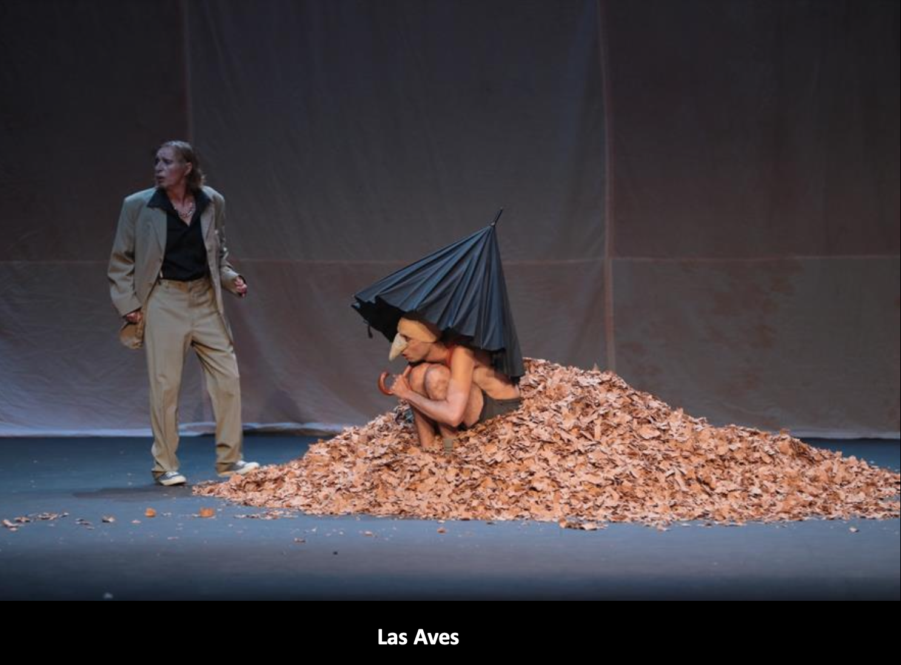
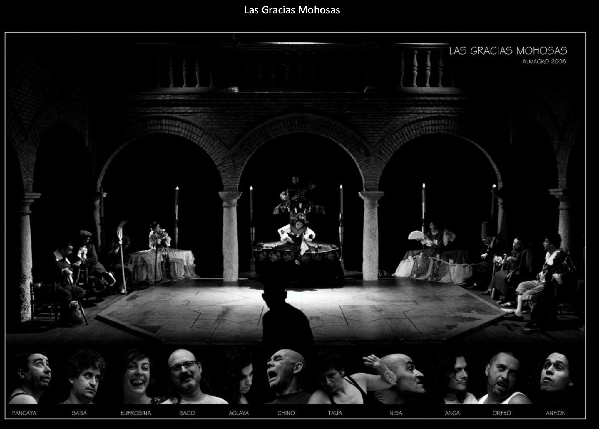
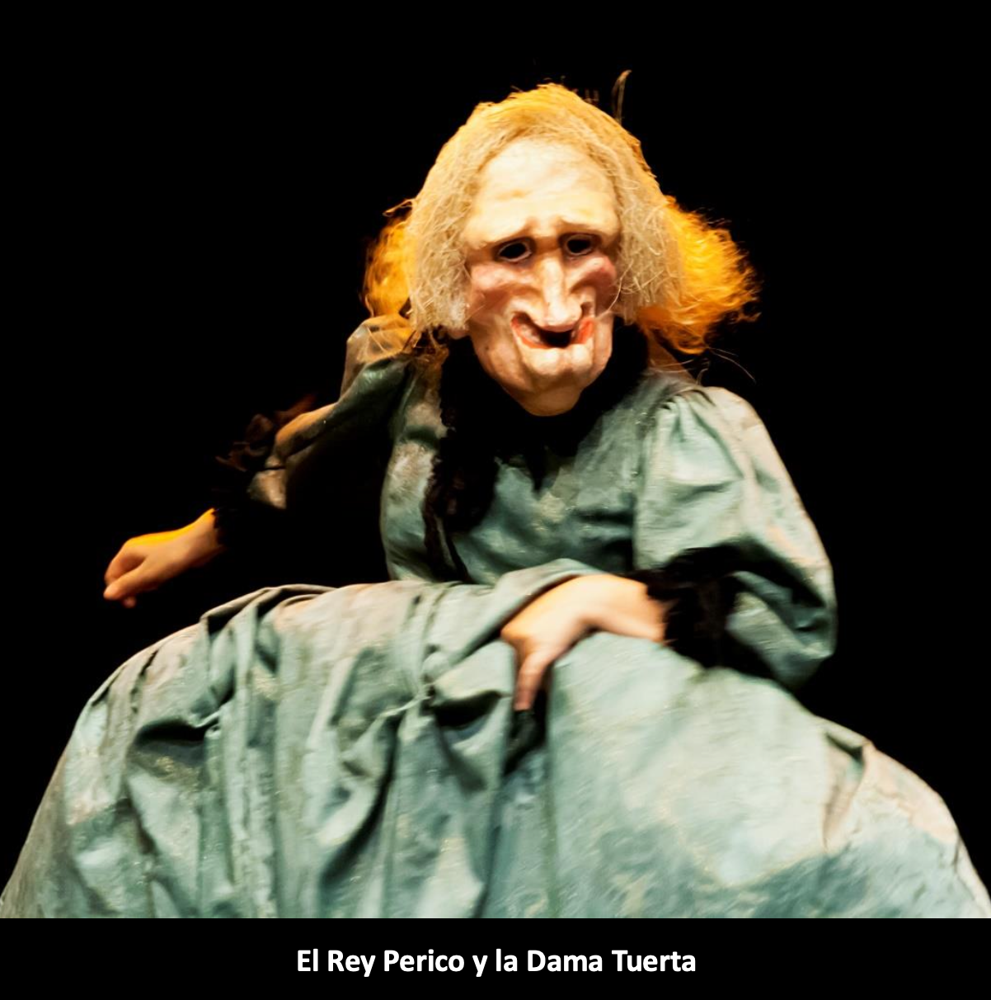
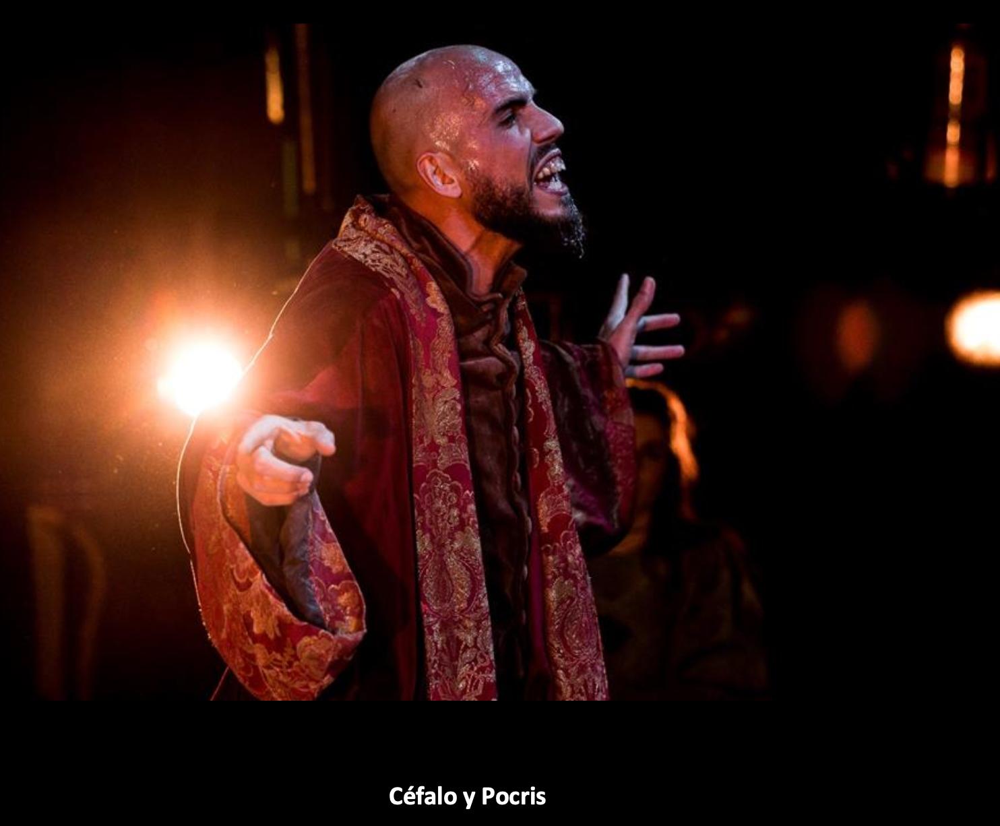
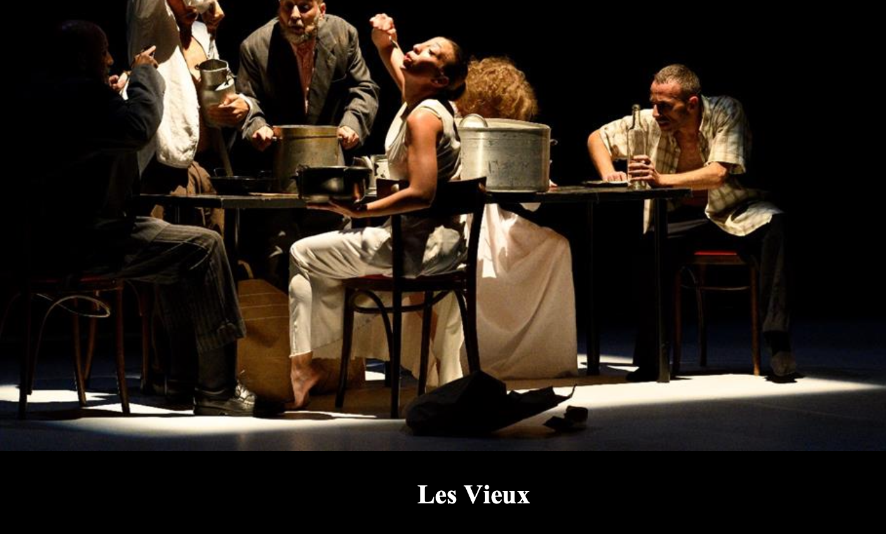
Entrevista en Canal Sur donde Juan Dolores Caballero reflexiona sobre su trayectoria, su proceso creativo y su visión de la escena contemporánea.
Ver entrevistaCanal de YouTube del Teatro del Velador, con fragmentos de espectáculos y materiales audiovisuales de su compañía.
Ver canal de YouTube